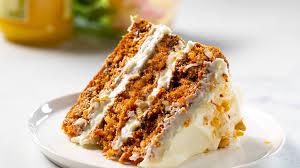

Home
Carrot Cake

These carrot cake bars are slightly denser than a cake, but slightly fluffier than a brownie—and have a wonderful caramelly flavor, thanks to brown butter.
Ingredients
Cake Bar
- 3/4 cup unsalted butter
- 2/3 cup firmly packed brown sugar, divided
- 1 large egg, at room temperature
- 1 large egg yolk, at room temperature
- 1 1/2 teaspoons vanilla extract
- 2/3 cup all-purpose flour
- 1 teaspoon baking soda
- 1 teaspoon ground cinnamon
- 1 teaspoon ground ginger
- 1/2 teaspoon salt
- 1/4 teaspoon ground nutmeg
- 1/4 teaspoon ground allspice
- 1 1/2 cups grated carrot
Frosting
- 8 ounces cream cheese
- 1 1/2 teaspoons vanilla extract
- 1 pinch salt
- 2 cups confectioners' sugar
Steps
- Melt butter in a light-colored saucepan over medium heat. Continue to cook, stirring constantly, until butter begins to brown and smell nutty, about 5 minutes. Carefully measure out 1/4 cup of the browned butter and set aside to use in the frosting. Pour remaining brown butter into a large mixing bowl; allow to cool for 10 to 15 minutes.
- Preheat the oven to 350 degrees F (175 degrees C). Line an 8x8-inch square pan with enough parchment paper to have overhang on all sides.
- To the mixing bowl with brown butter, add brown sugar and whisk until combined. Whisk in egg, egg yolk, and vanilla until completely smooth and combined. Add in flour, baking soda, cinnamon, ginger, salt, nutmeg, and allspice and mix until just combined. Fold in carrots. Pour batter into the prepared pan and spread into an even layer.
- Bake in the preheated oven until bars spring back when touched lightly in the center, 25 to 30 minutes.
- Remove bars from oven to cool in the pan for 10 minutes. Lift bars out of the pan using the parchment overhang, and remove to a wire rack to cool completely.
- Meanwhile, prepare frosting. Beat cream cheese in a large bowl with an electric mixer until smooth. Beat in reserved 1/4 cup brown butter on medium-high speed until thoroughly combined. Beat in vanilla, salt, and 1 cup powdered sugar until smooth. Add remaining 1 cup powdered sugar, and beat until thoroughly incorporated. Beat frosting on medium speed until completely smooth, 2 to 3 minutes more. Cover frosting and refrigerate until ready to use.
- Spread bars with frosting as desired. For best results when slicing, place frosted bars in the fridge for about 1 hour to allow frosting to set up a bit before cutting. Cut into 16 bars.